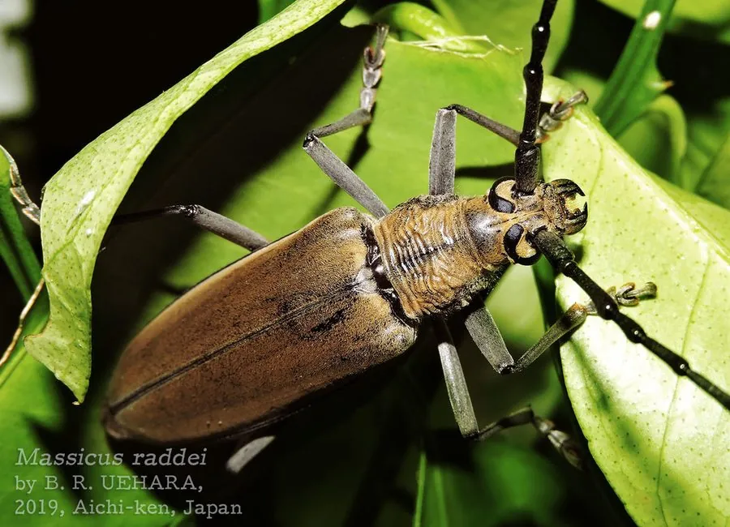

昆虫 · 动物界
栗山天牛 Massicus raddei

体灰褐、鞘翅密布黄褐色绒毛斑的大型天牛，幼虫蛀食栎类与栗树的干部，是中国东北栗产区的重要害虫。
- 分类
- 门节肢动物门纲昆虫纲目鞘翅目科天牛科属山天牛属
- 栖息环境
- 栎类、栗树和柞树成片的山地林区
- 地理分布
- 中国东北、华北和华东，以及朝鲜半岛和俄罗斯远东
- 保护级别
- 尚无保护级别；为栗产区与柞蚕场的重要蛀干害虫
物种志
栗山天牛的体长可达四至五厘米，是体型较大的天牛，体色灰褐至黑褐，体表密被灰黄色绒毛，前胸背板两侧有粗大的刺突，鞘翅表面散布不规则的黄褐色绒毛斑，斑纹连成断续的横带，鞘翅末端略呈斜切状。它的触角细长，雄虫触角超过体长，雌虫触角约与体长相等，足粗壮，后足腿节发达。
它分布于中国东北、华北和华东，以及朝鲜半岛和俄罗斯远东，栖息在栎类、栗树和柞树成片的山地林区，成虫在夏季羽化，夜间活动，取食树皮和嫩枝，有趋光性。幼虫蛀入树干，在木质部中凿出粗大的隧道，破坏输导组织，导致树势衰弱甚至枯死，是栗产区和柞蚕场的重要害虫，两至三年发生一代，以幼虫在树干内越冬。它尚无保护级别，防治以清理虫木、灯光诱杀和释放天敌为主。
形态与习性
- 体长可达四至五厘米，体型较大
- 体色灰褐，密被灰黄色绒毛
- 鞘翅散布黄褐色绒毛斑，末端略斜切
- 触角雄虫超过体长，雌虫约与体长相等
- 寄主幼虫蛀食栎类、栗树和柞树的树干
- 发生世代两至三年一代，以幼虫在树干内越冬
趣味知识
- 它是天牛里的大家伙，体长能到四五厘米，触角比身体还长。
- 幼虫在树干里一住就是两三年，把木头凿出粗大的空洞。
- 栗产区和柞蚕场最忌它，被蛀的树往往在几年内枯死。